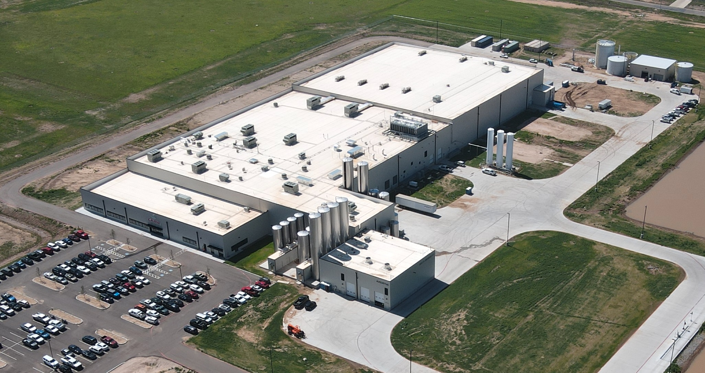

Owner’s Representative
Single point of accountability protecting schedule and budget.

More than 100 years of combined experience from three partners. We guide projects from concept to completion with precision, safety, and care.
We provide leadership, oversight, and detailed coordination from initial concept through startup. Our role is to ensure projects are delivered on time, on budget, and with unwavering attention to safety and quality.
With expertise across food processing, distribution, commercial, and mixed-use development, we help clients navigate permitting, design, contractor management, and final turnover to operations.
See Our Projects →Single point of accountability protecting schedule and budget.
Field oversight, safety culture, submittals, and cost control.
Integration from design through commissioning and turnover.